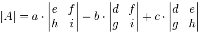
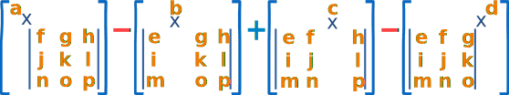
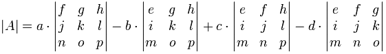

Determinant of a Matrix
The determinant is a special number that can be calculated from a matrix.
The matrix has to be square (same number of rows and columns) like this one:
A Matrix
(This one has 2 Rows and 2 Columns)
Let us calculate the determinant of that matrix:
3×6 − 8×4
= 18 − 32
= −14
Easy, hey? Here is another example:
Example:
B =
12
34
The symbol for determinant is two vertical lines either side like this:
|B| = 1×4 − 2×3
= 4 − 6
= −2
(Note: it is the same symbol as absolute value.)
What is it for?
The determinant helps us find the inverse of a matrix, tells us things about the matrix that are useful in systems of linear equations, calculus and more.
Calculating the Determinant
First of all the matrix must be square (i.e. have the same number of rows as columns). Then it is just arithmetic.
For a 2×2 Matrix
For a 2×2 matrix (2 rows and 2 columns):
The determinant is:
|A| = ad − bc
"The determinant of A equals a times d minus b times c"
|
It is easy to remember when you think of a cross:
|
Example: find the determinant of
C =
46
38
Answer:
For a 3×3 Matrix
For a 3×3 matrix (3 rows and 3 columns):
The determinant is:
|A| = a(ei − fh) − b(di − fg) + c(dh − eg)
"The determinant of A equals ... etc"
It may look complicated, but there is a pattern:

To work out the determinant of a 3×3 matrix:
- Multiply a by the determinant of the 2×2 matrix that is not in a's row or column.
- Likewise for b, and for c
- Sum them up, but remember the minus in front of the b
As a formula (remember the vertical bars || mean "determinant of"):

"The determinant of A equals a times the determinant of ... etc"
Example:
D =
611
4−25
287
For 4×4 Matrices and Higher
The pattern continues for 4×4 matrices:
- plus a times the determinant of the matrix that is not in a's row or column,
- minus b times the determinant of the matrix that is not in b's row or column,
- plus c times the determinant of the matrix that is not in c's row or column,
- minus d times the determinant of the matrix that is not in d's row or column,

As a formula:

Notice the +−+− pattern (+a... −b... +c... −d...). This is important to remember.
The pattern continues for 5×5 matrices and higher. Usually best to use a Matrix Calculator for those!
Not The Only Way
This method of calculation is called the "Laplace expansion" and I like it because the pattern is easy to remember. But there are other methods (just so you know).
Summary
- For a 2×2 matrix the determinant is ad - bc
- For a 3×3 matrix multiply a by the determinant of the 2×2 matrix that is not in a's row or column, likewise for b and c, but remember that b has a negative sign!
- The pattern continues for larger matrices: multiply a by the determinant of the matrix that is not in a's row or column, continue like this across the whole row, but remember the + − + − pattern.